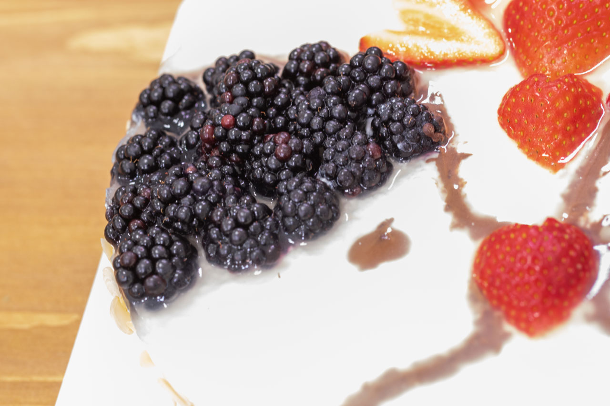
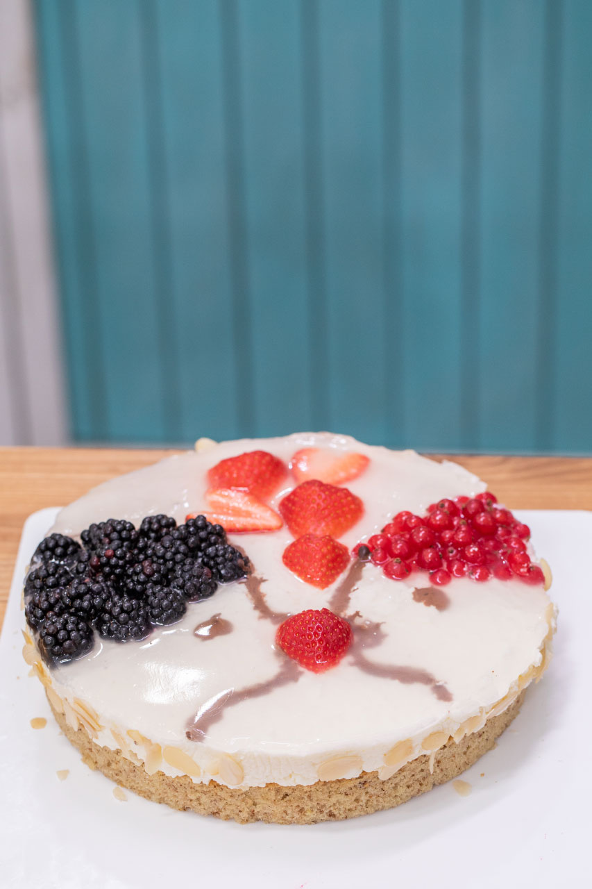
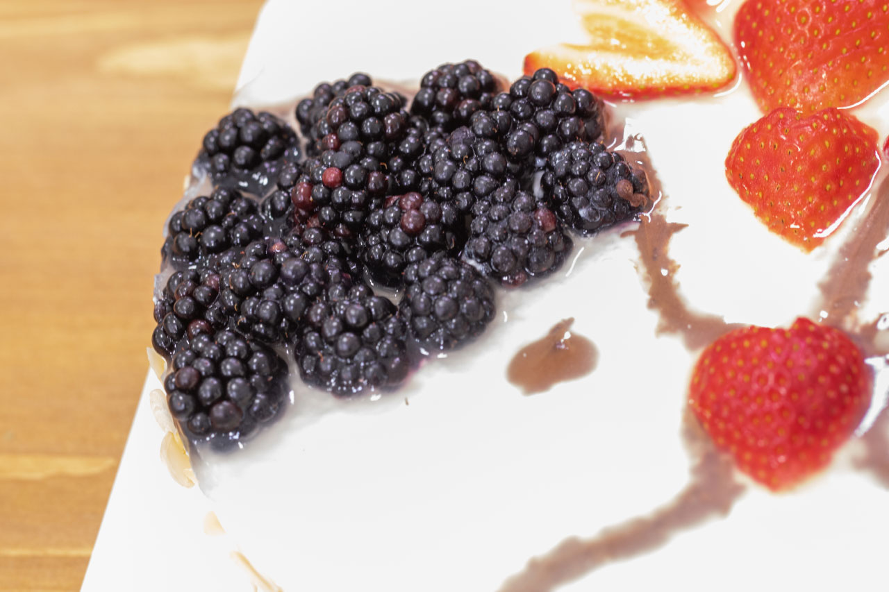
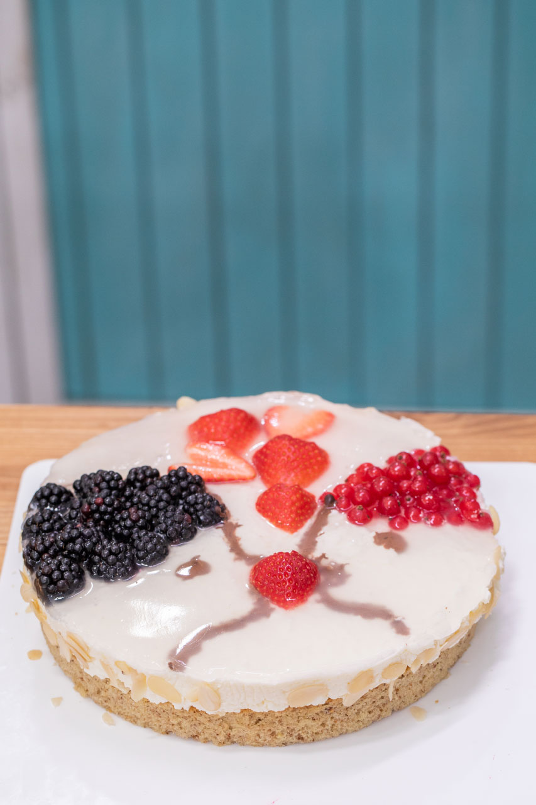

„Ovocné dorty s želé moc nepřipravuji. Dcera má ráda vždy tu vysokou vrstvu ovoce (hlavně malin či jahod) zalitou v červeném želé. Recept pro tento soutěžní dort je poskládaný z mých receptů a variant, co běžně peču, jen je trošičku upravený. Korpus jsem nevolila moc vláčný a dala jsem i ořechy, aby se příliš nerozmočil pod želé vrstvou a vložila jsem i křupavou mezivrstvu opět s ořechy. Zdobení jsem zvolila trošku netradiční.“
Korpus
3 vejce pokojové teploty
114 g polohrubé mouky
50 g jemně mletých ořechů (např. vlašských)
108 g cukru krupice
1 vanilkový cukr (esence)
48 g oleje
48 g vody
12 g mléka
kapička rumu
½ prášku do pečiva
malá špetička soli
olej na vystříkání ráfku
Zapneme troubu na 180 °C a navážíme si všechny suroviny. Vyšleháme bílky s pár zrnky soli a kapičkou vody do pěny, zašleháváme postupně cukr a přidáváme žloutky po jednom. Na nízké otáčky zašleháme olej, mléko a esenci. Nakonec ručně nebo na nejmenší otáčky pomalu zašleháme mouku s práškem do pečiva a ořechy. Nalijeme do ráfku a dáme péct na cca 20 až 30 minut. Mezitím si připravíme krém.
Krém
500 g měkkého tvarohu (lepší je ve vaničce)
250 ml smetany ke šlehání
sáček želatiny na ztužení krému nebo želatinového ztužovače
1 dcl vody
2 lžíce moučkového nebo vanilkového cukru
Dáme nabobtnat želatinu na 10 minut do vody, poté ji rozpustíme za stálého míchání. Vždy postupujeme podle návodu na sáčku.
Ušleháme si šlehačku a v samostatné míse také tvaroh s cukrem. Do rozpuštěné želatiny postupně zamícháme ušlehaný tvaroh a šlehačku, potom necháme směs trochu ztuhnout a připravíme si křupavou mezivrstvu.
Křupavá mezivrstva
100 g bílé čokolády
100 g plátků mandlí
Rozpustíme si bílou čokoládu, vmícháme do ní plátky mandlí, nalijeme pak na vychladlý korpus a dáme na chvilku vychladit.
Krém nalijeme na ořechový korpus uzavřený v dortové formě vyložený potravinovou fólií, na které máme křupavou vrstvu a dáme vychladit. Plát se snažíme udělat co nejtenčí. Další krok je příprava ovoce, rozpuštěné čokolády a želé.
Ostatní
želatina
100 g hořké čokolády na malování obrázku
několik čerstvých jahod (cca 3 až 4 ks)
150 g červeného rybízu (alternativně malin)
150 g ostružin
Připravíme si želatinu (max. zahřátí je 80 °C) a pak ji necháme vychladit.
Na přípravu obrázku je čas, než želatina dostane správnou hustotu. Namalujeme obrázek – dva obličeje proti sobě, co se chtějí líbat. Vlásky jim uděláme z ovoce (kluk ostružiny, dívka rybíz). Z jahod vykrájíme nožem, nebo vykrajovátkem srdíčka, která dáme mezi ně. Vše zalijeme želatinou a opět necháme vychladit.
Na dekoraci
150 g bílé čokolády
100 g mandlových lupínků
Nakonec vyndáme dort z ráfku, začistíme, přendáme na servírovací tác a případně dozdobíme po obvodu rozpuštěnou bílou čokoládou a mandlemi.
 
